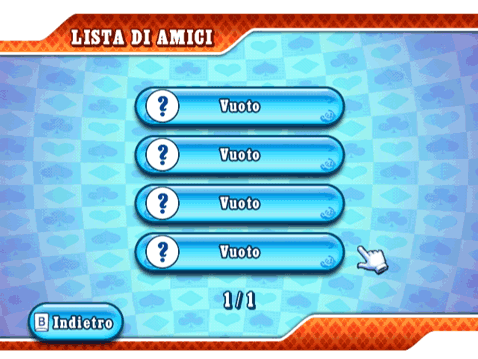
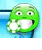
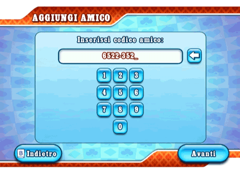

23 |
Amici |
 |
Ottieni il tuo codice amico dalla sezione "Crea partita". Potrai comunicarlo ai tuoi amici via e-mail o telefono. Lista di amici  La lista di amici ha due funzioni: fornire informazioni riguardo agli amici e al loro stato e consentire di partecipare a partite create dai propri amici o alle quali essi stanno partecipando. Dopo aver stretto un’amicizia nel gioco, potrai seguire il tuo amico e partecipare alle sue partite con gli amici o a livello mondiale se ci sono posti disponibili al suo tavolo. Per avere nuovi amici, è necessario registrare il loro codice amico e fare in modo che loro registrino il tuo a partire dalla sezione "Aggiungi amico". Prima di compiere questa operazione non sarà possibile visualizzare il nome o lo stato del futuro amico, ma esclusivamente il suo codice amico. Stato  Il tuo amico sta partecipando a una partita e puoi unirti a lui semplicemente selezionandolo dalla lista di amici.
Il tuo amico è online, ma non sta giocando una partita al momento.
Il tuo amico è online e sta giocando una partita. Al momento non puoi unirti a lui. Se non compare nessuna faccina, il tuo amico non è online.
Seleziona questa icona per rimuovere un amico dalla tua lista. Aggiungi amico  In questa schermata è possibile inserire i codici amico. Per poter giocare, il tuo amico deve compiere la stessa operazione sulla sua console Wii. |


 |
 |
 |